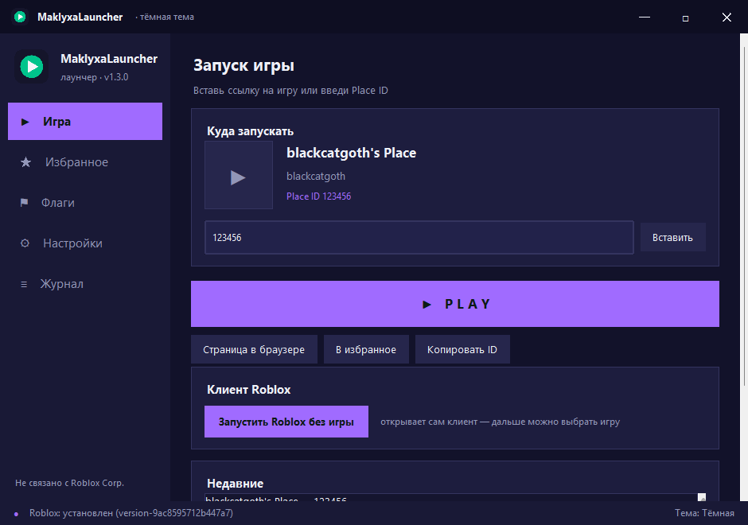
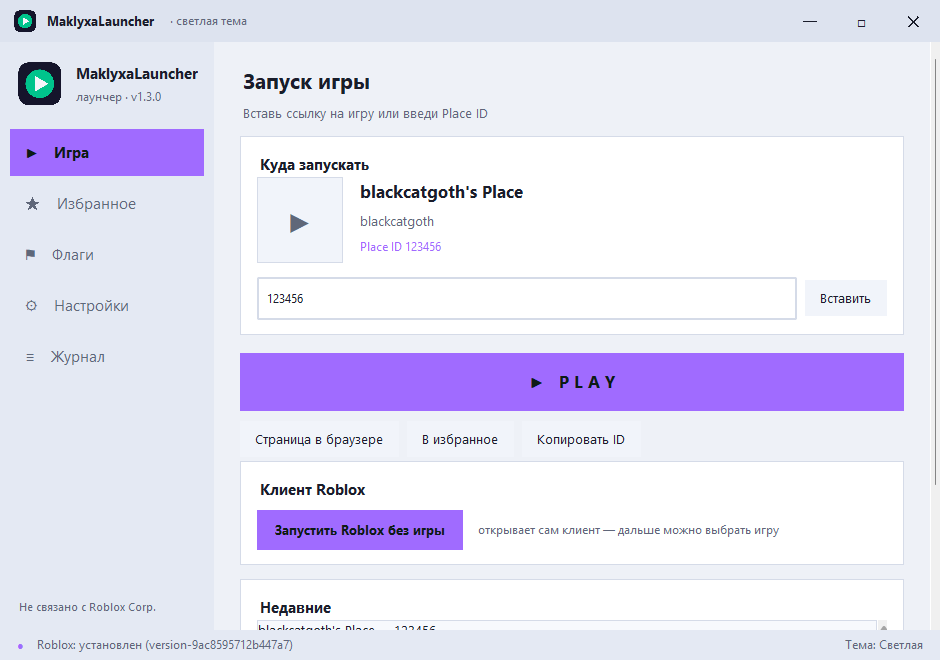
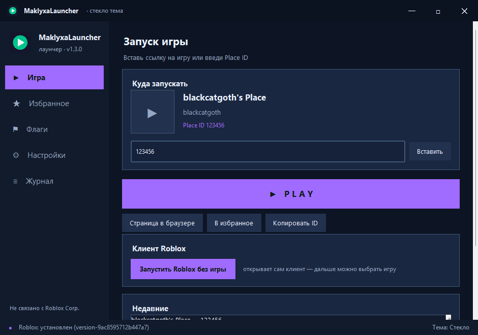

Бесплатный настольный лаунчер для официального клиента Roblox: запуск игр по ссылке, FastFlags, панель Froststrap/Bloxstrap и три темы оформления. Ничего не внедряет в игру и не обходит защиту.
Всё, что нужно для быстрого запуска игр — и ничего лишнего.
Вставь любую ссылку Roblox или просто Place ID — лаунчер покажет название игры, автора, иконку и сколько людей сейчас в игре.
Открой сам клиент Roblox, чтобы выбрать игру внутри. Если клиент уже запущен — лаунчер выведет его окно на передний план.
Если клиент не найден, лаунчер сам предложит скачать официальный установщик последней версии прямо с сайта Roblox — с прогресс-баром и автозапуском.
Ограничение FPS, графический API (D3D11/D3D12/Vulkan/OpenGL) и качество графики — пишутся слиянием, чужие флаги не затираются.
Регион сервера, Discord Rich Presence, детали сервера, счётчик времени и другие переключатели твоего бутстрапера — прямо в лаунчере.
Тёмная, светлая и «стекло» (полупрозрачное окно) + 5 акцентных цветов. Плюс избранное, история запусков и журнал действий.
Три встроенные темы оформления — переключаются в настройках.



Честный запуск — без модификации клиента.
Лаунчер формирует стандартную системную ссылку, которую подхватывает зарегистрированный обработчик — официальный клиент Roblox или твой бутстрапер (Froststrap/Bloxstrap).
Нет. Лаунчер только передаёт системе стандартную ссылку roblox:// и записывает конфиги (FastFlags, настройки бутстрапера). Ничего в игру не внедряется и не модифицируется — работают те же mechanisms, что и в Bloxstrap/Froststrap.
Нет. Лаунчер — один самостоятельный .exe-файл, Python на компьютере не требуется. Просто скачай и запусти.
Такое бывает с программами, собранными PyInstaller (они «не подписаны»). Лаунчер открытый по коду и ничего вредоносного не делает — при сомнениях можно запустить самотест: MaklyxaLauncher.exe --selftest.
FastFlags — внутренние настройки клиента Roblox (лимит FPS, API графики, качество), которые официальный клиент не показывает в меню. Панель бутстрапера позволяет менять настройки Froststrap/Bloxstrap (регион, Discord RPC и другие), не открывая их отдельно.
В папке %APPDATA%\MaklyxaLauncher\config.json: избранное, история, тема и остальные настройки. Всё локально, ничего никуда не отправляется.